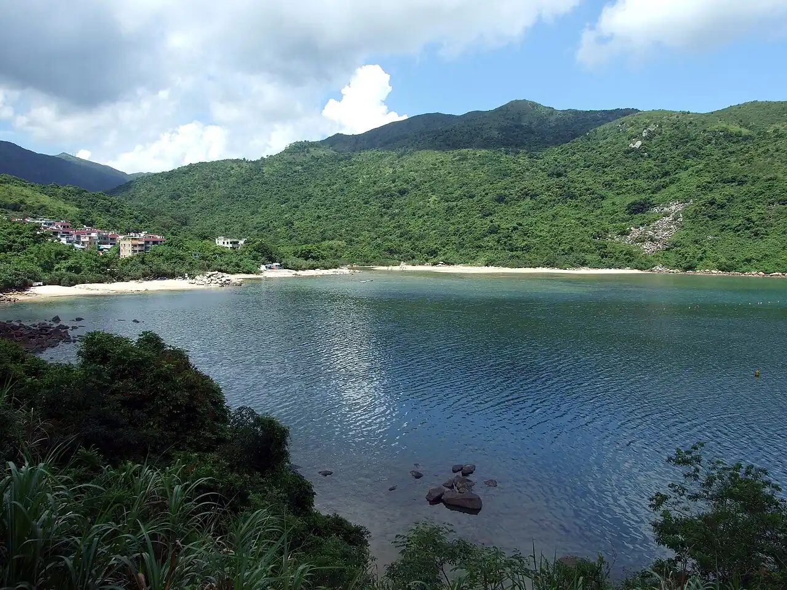

Hoi Ha Wan
Sai Kung, Hong Kong · snorkeling, kayak

Petite baie du parc marin de Hoi Ha Wan, au nord de la péninsule de Sai Kung. Malgré la proximité de la ville, on y compte des dizaines d’espèces de coraux durs.
- Lieu
- Sai Kung, Hong Kong
- Niveau
- Débutant
- Activités
- snorkeling, kayak
- Type d'eau
- Mer / océan
- Coordonnées
- 22.47, 114.34 (position approximative du secteur)
Dangers à connaître
- Coraux peu profonds : évite de te tenir debout dessus.
- Passage de bateaux dans la baie.
Le conseil d'Ocean Buddy
Viens à marée haute et en semaine ; pêche et prélèvements sont interdits dans le parc marin.
Ouvrir dans Ocean Buddy Télécharger sur l'App Store
Source : Fiche Ocean Buddy · septembre 2026 · à vérifier localement.